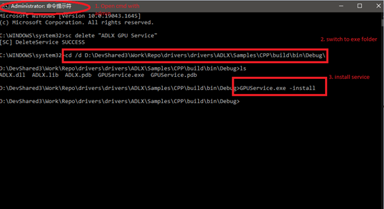
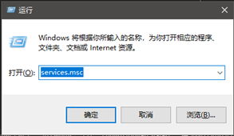
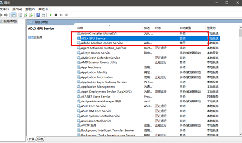
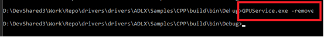
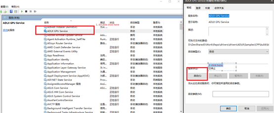
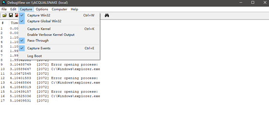
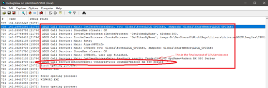

User may encounter a situation where they cannot directly use ADLX functionalities in windows service application.
This documentation demonstrates how to call ADLX functionalities in windows service call.
We have the sample codes in “ADLX/Samples/CPP/ServiceCall/GPUService” as CPP project or “ADLX/Samples/C/ServiceCall/GPUService” as C project. They both generate executable “GPUService.exe”.
This executable is run as service (if you run it as a normal application it will abort with errors)
Open windows command line utility with administrator permission. Switch directory to the executable’s path, take my dev PC for example:
“D:/DevShared3/Work/Repo/drivers/drivers/ADLX/Samples/CPP/build/bin/Debug/”
Copy “ADLX.dll”(ADLX library binary) in this folder, then enter “GPUService.exe -install:

Check if the service is installed:
Open windows’ service settings by win+R with services.msc:

Check service with name “ADLX GPU Service”

Open windows command line utility with administrator permission, enter “GPUService.exe -remove”

The service is removed in OS.
Start the service:

Run the debugging executable (compiled with debug configuration)
Open Dbgview.exe (visual studio contains it by default) with administrator mode to view the output of this service. By default, the service runs a worker thread in backgound to output GPU vendor id and name periodically with 3 seconds.
Set Dbgview.exe (admin mode) with below options:

Check the service outputs (with “ADLX Call Service:”prefix):
